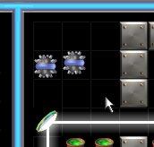
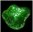

Mines
Mines bounce off light beams and light can be used to contain them. Mines will also bounce off all other objects like walls or mirrors. They are harmless unless they hit Exploding Barrels which they will trigger. Most mine levels force the player to keep the mines contained, one way or another, while they move the other pieces and try to hit all the coins. Unlike other levels these solutions can't be shown by looking at the final picture as the solution often has to be completed in several steps. One important note about mine levels is that there is never an element of timing necessary to complete the level. All levels can be solved logically without the quick rotation or moving of pieces.

These two mines are contained (fenced-in) by the white beam, the mirror, and the walls.

Slimes
Slimes eat things. They will eat mirrors and Exploding barrels. They will not eat a mirror if the mirror is being used to reflect a beam. Like Mines they are contained by beams of light and will not cross over or onto those squares. If a slime is contained in an area you are guaranteed that they will eventually search out every square in that area looking for food. Learning how the slimes decide where they will jump next is part of deciphering the game so it won't be explained here. One thing we can tell you is that they do not move randomly and that they always move using the same logic on every level. Another thing we will tell you is that once a slime has moved many squares it becomes impossible to determine where they will move unless you have very very good memory. You are best to set out a path for them right at the beginning unless you simply want to corral them and let them find a square within a fence of lights.
System Stable
Moving object levels have an extra stage before 'System Complete'. This is so the player can't quickly hit all the coins and win even though the mines are not really contained. In this 'System Stable' state a timer counts down and once it has elapsed the level is won. If a mine hits an exploding barrel while in 'System Stable' then you must restart the level as you normally would after an explosion.
The 'System Stable' message.